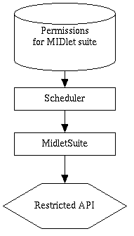
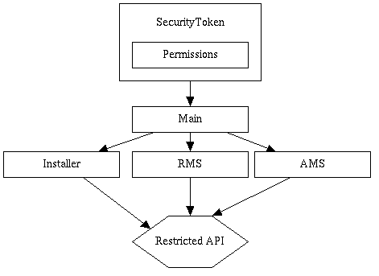

All MIDP applications are "untrusted" unless otherwise setup to have some explicit trust, this is done by giving each MIDlet suite it's own resources and not allowing access to or "see" other suites resources.
However, while restricting access to resources MIDP must also:
The first feature depends on the Main class and
SecurityToken class. Main, being the first class
running in the VM is implicitly trusted to create and issue
SecurityToken objects to the internal classes that need them.
Restricted internal methods take a SecurityToken as an extra
argument, which they check before performing their task. A "untrusted" MIDlet
cannot get a SecurityToken object on its own so it will be
restricted.

The second feature is depends on the Scheduler class,
MIDletSuite interface, and Installer class. The
Scheduler is anchor of trust, from which a restricted public
method can get the interface to scheculed suite and check to see if the suite
is permitted perform the action. The Installer class determines
if a suite is "trusted".
@since MIDP 2.0